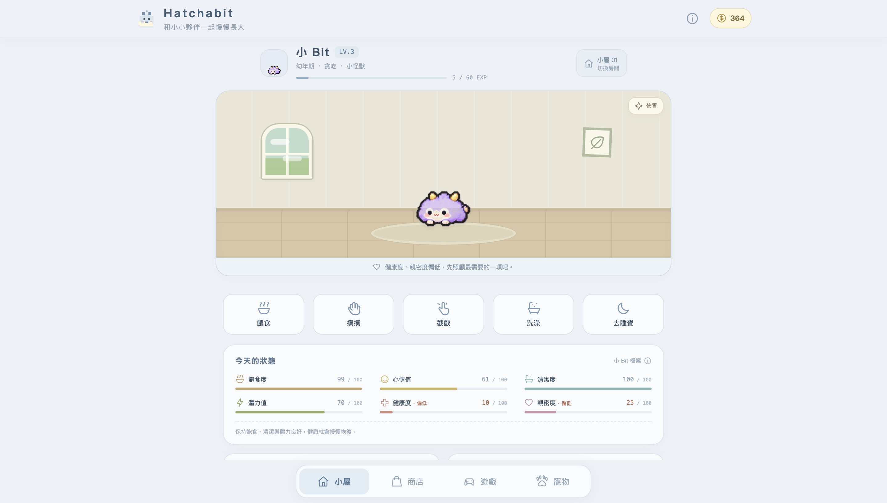
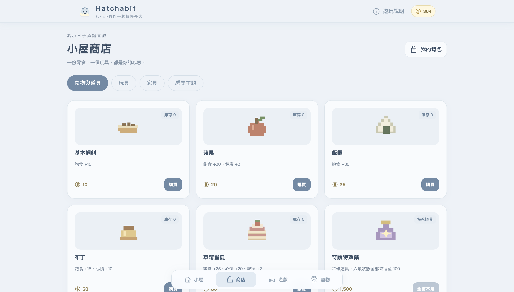
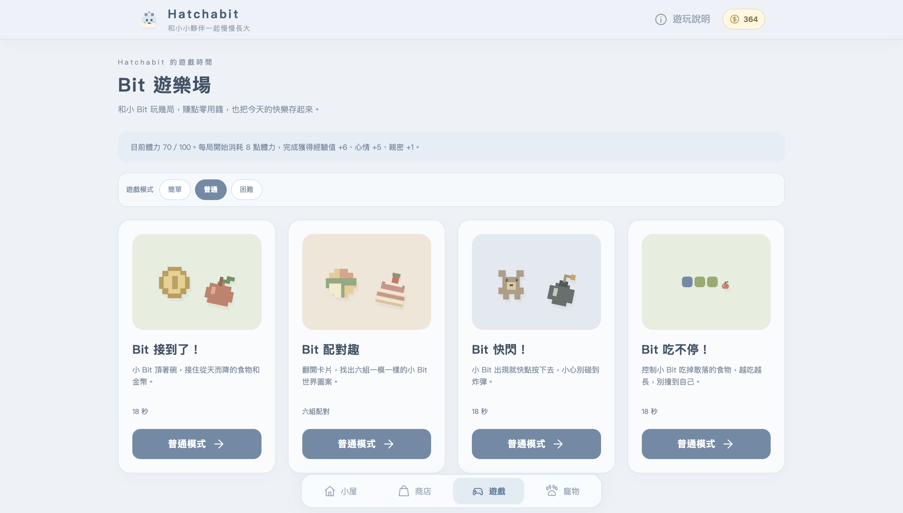
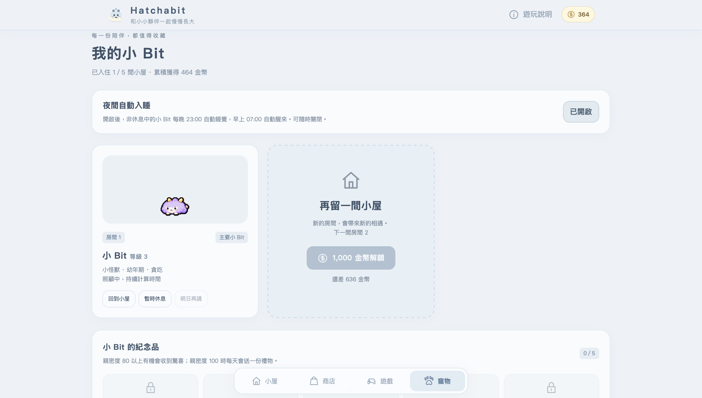

和小小夥伴一起慢慢長大 — 單一檔案純前端電子寵物養成 Web App
以日常照顧、房間佈置與角色成長為主題的互動網頁遊戲。全系統不依賴任何外部前端框架、後端伺服器或外部圖片資源，
將 HTML5 介面、CSS3 動畫、純原生內嵌 SVG 繪圖、四款休閒小遊戲與 LocalStorage 離線進度存檔全數封裝於單一
index.html 檔案中，經六個主要版本迭代至 V6.0 並部署於 GitHub Pages。
本專案起源於生成式 AI 協作網頁開發實作練習，探索如何在不依賴 React、Vue 等前端框架與外部圖庫的情況下， 透過嚴謹的規格設計與多輪迭代，僅以單一 HTML 檔案建構出結構完整、數值平衡且具備長期可玩性的互動網頁遊戲。
為了讓玩家在手機與電腦瀏覽器開啟網頁即可立即遊玩且不必擔心圖檔遺失或伺服器停機， 全站視覺元素皆改採程式繪製的原生 SVG，並結合瀏覽器端時間戳記計算實現真實的養成節奏。
index.html 整合所有邏輯與 SVG 向量繪圖，達到秒開即玩與零破圖風險。
提供貓、狗、企鵝、狐狸、史萊姆、小怪獸共 6 種角色，歷經蛋、幼年（LV.2）、青年（LV.10）到成年（LV.20）成長外觀； 並賦予貪吃、愛玩、愛睡、愛乾淨、黏人、調皮 6 種影響衰退速率與互動加成的個性。
最多可擴建解鎖 5 間獨立房間分別飼養不同寵物，並可於商城購買溫馨、森林、甜點、星空、海洋 5 款主題小屋與各式 SVG 家具。
內建「接接樂」、「記憶翻牌」、「反應點擊」與「節奏拍拍」，消耗寵物體力遊玩並依星級得分結算金幣與心情值。
開啟保母模式後每 5 分鐘自動檢查數值並消耗背包食物庫存（飼料、蘋果、飯糰、布丁、蛋糕）進行回補；關閉網頁後亦會依時間差結算狀態。
包含孵化大師、成長見證、豪宅主人等 8 項里程碑成就，親密度達標時寵物會贈送成長相片、幸運羽毛、精緻貝殼、玩偶徽章與星之碎片。
所有遊戲進度以 JSON 儲存於 LocalStorage（hatchabit_save_data），支援手動匯入匯出備份與舊版結構自動補齊升級。
全站雖封裝於單一 index.html 檔案中，但內部邏輯嚴格劃分為表現層、狀態機層、小遊戲控制器與 LocalStorage 持久化層。
| 類別 | 使用技術 | 實作方式與用途 |
|---|---|---|
| 前端結構與樣式 | HTML5、CSS3 | 單頁式響應式佈局、彈出視窗與 CSS3 Keyframe 角色互動動畫 |
| 向量圖形繪製 | 原生 Inline SVG | 以 <svg> 路徑繪製 6 種寵物各階段外觀、5 款房間背景、家具、食物與紀念品 |
| 程式邏輯 | Vanilla JavaScript (ES6+) | 零外部套件實作生理數值衰退、隨機個性加權、小遊戲迴圈與成就判定 |
| 資料保存 | Web Storage API (localStorage) |
保存多房間進度、庫存與離線時間戳記，並具備跨版本結構合併機制 |
| 部署與開發流程 | Git、GitHub Pages、Vibe Coding | 規格驅動六階段迭代開發（V1.0 至 V6.0）並託管於靜態網頁平台 |
建立孵化與基本照顧數值系統及初始 LocalStorage 存檔；第二版修正行動端觸控衝突，全面重構原生 SVG 角色外觀並加入等級成長階段。
確立 Hatchabit 視覺，導入 6 種隨機個性造成差異化消耗速率；隨後實裝 4 款休閒小遊戲建立體力換金幣的經濟循環。
擴充至 5 間獨立房間與 5 款主題家具、實作防連點冷卻、離線時間差補算、綁定背包食物的保母模式、8 項成就與 5 款紀念品圖鑑。
問題：在手機瀏覽器遊玩「接接樂」或「反應點擊」時，touchstart 易與頁面捲動或 click 事件重複觸發導致延遲。
解法：統一事件監聽介面並在遊戲容器內阻斷預設捲動行為，確保桌機鍵鼠與手機觸控靈敏度一致。
問題：早期僅依賴網頁開啟時的計時器，關閉分頁即停止計算；快速連點餵食按鈕會短時間刷滿經驗值。
解法：存檔內加入 Date.now() 時間戳記於重開時依比例補算離線衰退，並為日常互動加入冷卻鎖定計時器。
問題：若保母自動回補不消耗資源或直接扣除金幣，會破壞購買食物的遊戲設計並產生數值漏洞。
解法：將自動餵食邏輯嚴格綁定背包內的食物庫存（飼料、蘋果、飯糰、布丁、蛋糕），必須實際檢查並扣除庫存才能執行回補。
問題：V6.0 新增多房間與成就欄位後讀取舊版 JSON 會產生 undefined 錯誤；頻繁重建整個 SVG DOM 會造成畫面閃爍。
解法：載入存檔時執行版本檢驗與預設欄位深度合併（Data Migration），並將靜態背景與動態表情分離，僅局部更新變動屬性。



